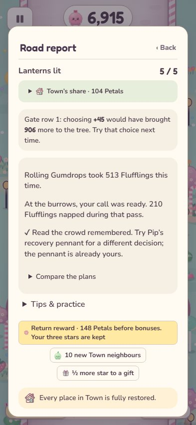
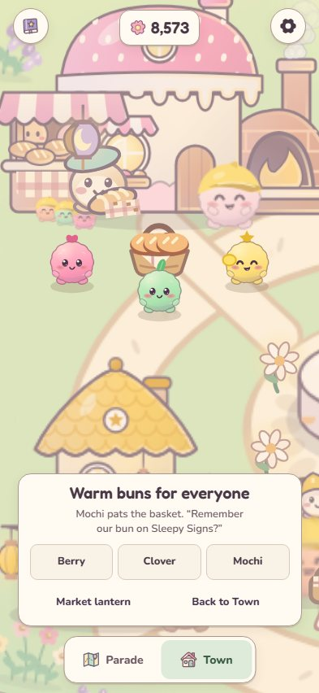
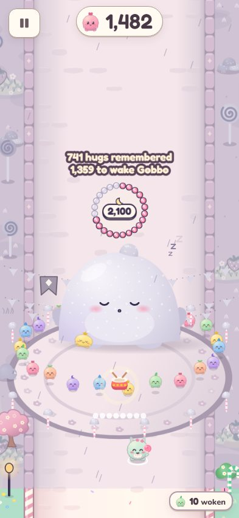
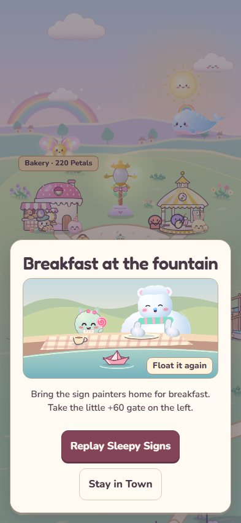
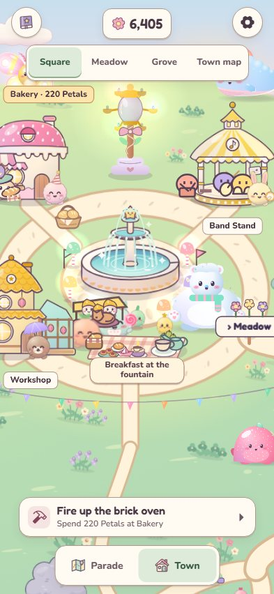
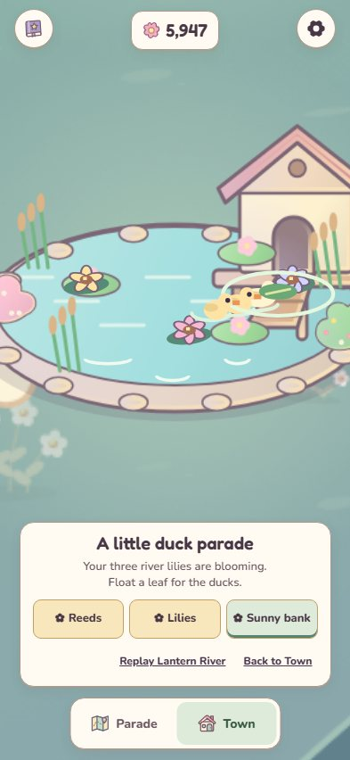
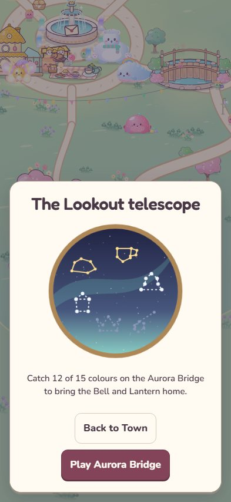

Where I went back
Informed developer play · 393 × 852 · ordinary touch in Chromium
The active clock
I started at the ordinary local production URL with an empty browser profile. Every road in this log uses the live game clock. I steered, tapped abilities and chose the roads by hand. I removed the entire interval whenever more than 30 seconds passed between my inputs, reads or recorded viewing. The browser also recorded automatic changes of screen. Those events grant zero extra time. Closed-tab intervals, separate seeded comparisons and automated coverage sit outside this clock.
130 minutes across ten sittings
I spent 110:56 on first visits, a tactic I chose to practise or someone I wanted to see. The clock also includes 13:15 of forced retries. Playing all four regions and waking the Giant took 55:23. I saw a new fork pay off as late as 129:36. I would give this build credit for its second hour. I found distinct things to do in the third, and insufficient evidence for a full third hour.
| Activity | Hour one | Hour two | Hour three | Total |
|---|---|---|---|---|
| First-time play | 31:32 | 5:33 | 0:00 | 37:06 |
| Chosen mastery | 8:31 | 31:41 | 7:15 | 47:27 |
| Character or Town discovery | 8:52 | 15:50 | 1:42 | 26:24 |
| Forced repeats | 11:05 | 1:06 | 1:05 | 13:15 |
| Menu search | 0:00 | 1:32 | 0:00 | 1:32 |
| Reward claims | 0:00 | 0:51 | 0:00 | 0:51 |
| Diagnosis | 0:00 | 3:27 | 0:00 | 3:27 |
| Observed active | 60:00 | 60:00 | 10:01 | 130:01 |
8:38 of open-tab inactivity was removed before assigning hours. Categories were assigned when my intention changed. Rounded rows can differ by a second from the unrounded total. One earlier pilot lasted 9:47 and caught a clipped picnic receipt. I restarted from a blank save after fixing it. None of the pilot contributes to these figures.
| Minute | Observed decision or payoff |
|---|---|
| 0:52 | I paid 100 of 120 Petals to reopen Fig’s Bakery. |
| 1:04 | I decided to go back for Fig. I had steering again at 1:17. |
| 4:17 | I recognised Fig cutting bread on Treat Street after bringing her home. |
| 43:18 | Gobbo already had my stitched pennant when I failed his hill. |
| 53:43 / 55:23 | I began the Snow Giant’s hill and woke him. Pip received his first cup at 55:41. |
| 56:39 / 65:38 | I floated Suki’s wrapper boat, then walked the cat home to the raincoats. |
| 108:52 / 119:56 | The Loaf and Cup shone through my telescope. Mint later filled the last chair. |
| 126:00 | I chose Mint, Mint, Honey as my welcome song. Tambo remembered it after reopening. |
| 128:31 / 129:36 | I chose to retry for Taffy Street. Staying left reached the street. Recentring later filled both final jars. |
Two routes with a reason to return
For the hands. Seedfall rewards arriving under the next drop early. I needed a look at the lane order to catch eight. At Grand Bazaar, setting up on the right let me stay left for two successive stalls and raise my score from four to six. Aurora’s narrow span then asked for a full-width crossing. Its wide span rewarded a three-lane sweep and a reversal. I got nine by combining a good wide span with a poor narrow one, then nine again the other way round. The next two constellations need twelve. For a shorter challenge, One Good Drumbeat took 2:45 over five attempts and finished when I put ten sleepers and a final ×2 into the same run.
For the friends. Save the raincoat letter, shelter the last yellow hood, meet Poppy and carry 72 friends through Nap Cat Crossing for the cushion. I brought 81. The next time through Drizzle Dell I collected the cat on the right before crossing back for the coats. The cat was still asleep under their awning after I left town. Suki’s sweet gave me a second thread from her welcome to the Giant’s plate and back to her cup. Those two endings have pictures I could point to. The lantern keeper I brought to the same table barely showed up.
What the third hour buys
At 120 minutes I had already finished the story, paid for every Town project, seated all five fountain guests and earned three Leader medals plus Hedge Duet. The visible map offered High Ridge. Bell and Lantern still needed twelve Aurora colours. Suki’s stall trial still wanted one more group. The Band Stand would take a song of my own. Only the first 10:01 of the third hour belongs to the continuing save. The next fifty minutes are unverified.
| Where the idea came from | Time | What actually changed |
|---|---|---|
| “Try High Ridge” on the map | 0:46 | I stayed right, skirted the frost and took the double gates. 19,462 finished. My earlier Rescue Hollow run brought 4,562. The approaches used different inputs throughout. |
| Gumdrop Alley’s route intentions, supplied by the director | 0:56 to find it, 2:25 for two runs and their reports | At 2,088, Tambo turned +1,700 into 5,488. The report showed ×3 would have made 6,264. Next time, 2,305 reached the crossing. I held left, made 6,915 and earned the road pennant. The decision was worth making. Its invitation sits four disclosures deep. |
| Mochi’s Bakery outing, supplied by the director | 2:31 | I chose Mochi, packed a bun and played Sleepy Signs for her. I missed the painters and finished with 114. Back at the Bakery, Mochi patted the basket and named the road we had walked. I had declined this same road when the only offer was another star. |
These samples account for 6:38, including the menu search. I did not add them to the 130 minutes. A second lap for each of the three bun friends would repeat a system whose payoff I had already seen. A new date can offer breakfast work. A calendar rollover can test that code, but it cannot demonstrate that anyone wanted to return. Outing times and notes.




On a separate final-build visit, the telescope named the next two shapes and opened Aurora Bridge in one touch. I caught four colours and brought 8,467 friends home. The result offered “Try for 5.” Back in Grove, the telescope still wanted twelve and kept my earlier nine. This diagnostic took 3:09 including pauses. In a separate assisted run I caught thirteen. The Bell and Lantern lit, the telescope asked for fifteen, and the keeper still had no gesture at the breakfast table. Neither run contributes to the playtest clock. Hand-played return · Assisted route · Four shapes in the glass.

What I would build next
Give the lantern keeper a hand in the breakfast scene. When the Bell and Lantern are lit in Grove, let the keeper turn the picnic lantern towards the pink boat. One tap could send its reflection across the water. I would budget 2 hours 45 minutes for this later pass. Allow 45 minutes for two poses and the reflection, 45 for the existing table and earned flags, 30 for touch, keyboard and reduced motion, and 45 to play both orders of discovery and a returning save. A keeper visit already costs a road replay. It deserves a consequence as legible as the cat under the awning.
The ten sittings, in order
The first thirteen minutes
I went right at the first fork, crossed back too late for Fig and brought 49 friends home. Pip set an empty plate in the Bakery. At 0:52 I spent 100 of my 120 Petals to open it. Seeing the empty window made me want to try again. I decided at 1:04 and regained steering at 1:17.
On the replay I stayed left. Fig fell into step, but only seven reached the wall of eight. The retry card suggested the +5 gate. I took it first, crossed for Fig, sent 15 into the wall and brought 78 home. Fig appeared in the Bakery and cut bread beside the bandstand on Treat Street. The failure and recovery took 39 seconds of the first sitting.
Where my plan changed
I missed the sign painters on Sleepy Signs. When Tambo offered to lead, trying his drum interested me more than doing the road twice. At 6:00 I had sheltered three hoods on Drizzle Dell and caught four parachutes on Seedfall. Two daisy lamps lit. I chose “Keep this outing” and the map held the picnic for me while I went to wake Mumu.
I detoured to Starfall for four catches out of ten. On the Marsh branch I tried to save the last row at Nap Cat Crossing first. Only 68 of 96 reached the porch. Both raft crews made it across Lantern River. The ducks brought a lily, and the result told me where it would bloom. At 13:13 I closed the game intending to spend my Petals on the pond, see the hoods, then head for Festival Eve.
I came back for the lily
I reopened Town with 1,438 Petals. The Meadow sign showed the projects I needed. Five purchases cost 900. The pond cost another 260. My lilac lily had survived the break and was growing beside the sunny bank. At 15:40 I called the ducks to the reeds. “Replay Lantern River” appeared. I missed the left flower on my first pass. On the second I took the multiplier, crossed left after the last gate and brought home a gold lily. At 17:20 I could point to both flowers in the pond.
The raincoat invitation was still waiting in Meadow. One tap took me straight to Drizzle Dell. I opened Otto’s umbrella and held left until the back row passed the awning. At 18:28 all three were sitting together below the fountain. I left the third lily for another visit.
A borrowed crowd taught me something
On Festival Eve I took the lantern crew through the festival arch. I read Luma’s wing-tip towards a lantern keeper as a response. The same line plays on every Luma clear. I used the persisted pennant at Gobbo’s hill to measure the new cross-road consequence. By 24:06, Poppy and Plum had left my Taffy Float and were playing at the Band Stand. I spent another 420 on the Starlight Lookout because its first-call recharge interested me more than another Petal bonus.
At 29:43 I chose Sugar Bridge’s crossing practice. It lent me the 243 friends from my failed run. My first attempt produced zero. On the second I kept 220 but missed the seed. On the third I waited for the seed, cut left for ×3, crossed the bridge and brought home 878. Returning to the full road, I missed the seed but used the cut to clear with 704. The whole-road result and the borrowed crowd stayed separate.
Suki’s Stall stopped me nine short, then four short. I turned off the offered Helping hand. The first wall needed the early right ×3. The next needed the left +390. I took Balloon Street and brought 3,138 home. At 35:34 I closed the game as Suki wrapped a pink sweet. I wanted to try her on the counter road and find out who would get it.
I spent friends on Gobbo’s pennant
Fig was the first friend I recognised on a later road. By 4:17 I had seen her cutting bread by the bandstand on Treat Street. At 35:56 I chose Candy Floss Drizzle and Grand Bazaar, leaving Caramel Cat for after the story. The Bazaar offered “Try for 5” after I caught four of twelve. I scored three on the first replay and six on the next. Going right before the second wave left me time to hold left for two stalls. Poppy’s letter arrived with my two market pennants. I pinned the letter and continued to Lantern Market. The booth keepers met me there. I had expected the hoods, but the Bazaar was my second branch.
On Festival of Sweets I steered left with Suki. The carrier fell into step, 5,478 reunited and 18,692 reached the end. I picked “Visit Gobbo’s hill” over buying the Lookout roof. At 43:18 I recognised the cream diamond and notched hem on his grey bunting. I still fell 618 hugs short. The flag was there before I woke him. Another attempt fell 136 short. I changed to Tambo, took the ridge, brought 5,893 to the wake and saw the flag turn pink.
The hill and the first cup
I spent 520 on the Lookout roof for faster call recharge and let Wren lead the Frost Road. I lit three of four snow pools, brought 64 of 96 home on Snowdrift Ribbon and caught five of fifteen colours on Aurora Bridge. I declined “Try for 6” because I wanted to see the Giant. Icefall stopped me 22 short. I followed its +400 then ×3 hint, chose Rescue Hollow and finished with 4,562.
I opened the final hill at 53:43. The first pair of paws wanted more friends than I had. I woke the right one, then shared enough between the next pair. The Giant woke at 55:23 with 25,054 friends present. I chose “Come home” and saw his scarf, the cups and his line to Pip. At 56:08 I closed the tab at breakfast with 5,169 Petals. My plan was to find Suki at the table before following Poppy’s letter.
The one-star run I preferred
I reopened in Grove, chose Square and touched the cups. By 56:39 I had watched the Giant open the pink paper with Suki and floated the boat myself. Coming back with all three sign painters put Fig’s jam tarts on the cloth. The boat was already beside Suki’s cup. The same table now asked for six parachute groups. On Seedfall I caught four, then five, then three twice. At 61:15 I wanted to see Poppy more than I wanted another full trip to that same wave.
Poppy’s saved invitation took one tap. I rang the first and last float bells and missed one of the middle two. Poppy played at the fountain. Its envelope gave me a reason to return to Nap Cat Crossing. I needed 72 home. Going in on the wrong side left 57. Starting right, letting the back row past the first pair and then crossing left brought 81 home. A brown cat lay on the cushion. The next envelope said to meet it on the right before the shower.
My first Drizzle Dell brought 1,082 home and left the cat behind. On the next I held right until I saw “Cat aboard”, then went left for the last yellow hood. Just 965 finished. At 65:38 I could point to the cat asleep under the awning. I preferred that one-star outcome to the two-star miss. I closed the game there. When I came back I wanted to try the Candy branch I had skipped, then look through the telescope I had paid for.






Why I played Tambo’s road five times
Caramel Cat was still waiting where I had left it. I put Suki in charge and kept 76 of 96. I followed its Sprinkle Parade invitation, lit one of six booths and finished with 2,537. The next offer was another star on Pip’s first road. I went to Grove instead. At 67:56 I spent 850 Petals on the telescope. Its first-call recharge improved from 6% to 10%, and the stars showed me what eight Aurora colours would bring home.
On Aurora Bridge I went from four to six to seven colours, then twice back to six. The green and teal at the end of the first span asked me to cross the whole road. I used the ordinary pause to inspect the marked centre plank on one retry. At 72:36 I wanted a different action. Suki’s challenge gave me one group, then one, two, two and two. Waiting at a stall until a friend stopped there mattered. All five attempts together took 2:48. The hint repeated the goal when I wanted to know which group I had missed.
I lit Lantern Glade and built the treetop deck, which finished Grove and earned the Wool Beanie. I put it on. At 78:01 I chose One Good Drumbeat. The first four finishes were 476 with no successful call, 500 with ten answers, 596 with ten, then 504 with none. On the fifth I took the opening addition, crossed for ×3 and paused with 294 beside the right-hand sleepers. I resumed, called all ten and cut left for ×2. At 80:46 the road gave me its medal for 608. The five tries took 2:45. I would play this challenge again with someone because I can tell them exactly what the four-friend miss taught me.
I took the medal home. I saw it on the result and in my trial record. Grove opened without a new medal display. At the Band Stand, Poppy, Plum and Honey were waiting. Their card named the fourth seat. At 81:19 I closed the game intending to bring Mint home and try Wren’s single-call challenge.
Three medals, one empty chair
I came back to the Band Stand. Three attempts woke Mint on the right of Taffy Float. “Mint ready” made sense to me, but “push the float” didn’t tell me when to cross from the passenger to the bell. I tried following the cart back towards the centre. It still said “Bell missed.” I left the fourth chair empty at 84:00.
I had found nine friends in the album and an empty “Story so far” after breakfast. I checked the implementation between sittings. At 84:08 I tried the Giant’s own greeting in the Square. His two illustrated panels appeared in the book. That minute belongs to diagnosis. Nothing I saw on the breakfast table had told me to touch his body as well.
Wren’s first Borrowed Light brought 3,200 home, with neither gate lit. I delayed the call until the first gate was behind me. The second row showed 4,000 on the left and 2,700 on the right. I kept left and earned the medal. Otto’s Borrowed Umbrella gave me a better near miss. My first umbrella saved 38 of 48. Opening it later brought 43, one short. On the next run I waited for the bridge, then cut right of the last cloud. I brought 46 home at 87:44. These two trials and Tambo’s used three different inputs I could remember.
Back in Square, I paid 220 for the brick oven. The fire stayed lit on its right wall. I shared buns, then lit the table and saw Fig turn the dough while Pip copied her floury paws. I chose Grand first on the actual Friday Daily. With 491 friends approaching a wall of 200 I took High Road for its ×3. I finished with 2,484, earned 46 Petals and stamped the first circle. At 90:20 I closed the tab. I would try Hedge Duet next. Gentle could wait.
What the wider bridge taught me
I did come back for Hedge Duet. My first split sent 160 left and 440 right. At the next hedge the multiplier had moved to the left, so I reversed the steer. Both halves survived twice and 4,874 came home. This took about a minute. The map then offered Frozen Pond, the fork I had skipped on the final hill. My first return failed 702 hugs short. I opened “Crossing practice” hoping for the Giant’s paws. It offered an earlier honey crossing with 733. I took the whole road again. Sending 4,286 and 8,108 to the last two paws let me wake both on a total of 12,394.
The 480-Petal garden seat in Meadow let me pour tea. Suki said, “I saved the sunny seat for you.” Nearby, the middle lily shore was the only one without a flower. I asked the ducks to meet me there and steered to the centre after the rafts. At 97:44, the third pink lily was growing between my gold and lilac ones. Choosing the sunny bank sent the leaf and the ducks over to the right. That was my payoff from the outing I had left open at minute 13.
Breakfast still wanted six parachutes. In four minutes on Seedfall I tried the landing shadows, caught the marked left puff and used the pause menu to restart as soon as the wave was over. The five attempts produced 2, 5, 4, 4 and 4. The retry target said three while the table wanted six. I left the meal unfinished. I spent a little time on a 15-star bench, too. The gift told me to find a + in the Square. I could read the numbered spots in the accessible controls, but I couldn’t find a visible plus at that zoom. I kept the bench in inventory, put on Tambo’s Market Bonnet and chose the sweet-shaped Bazaar lamps for my fountain.
I went back to Grove at 106:27. The narrow Aurora span gave me only two colours. On the wide span I used the ordinary pause to read the next three planks, then played the two left-centre-right sweeps and crossed back left for the seventh. At 108:24 I had nine of fifteen and 4,554 home. The same one-star result offered two constellations and “Light the picnic lantern.” I saved the keeper’s outing before going to look. The loaf and handled cup were gold through the telescope. I closed the tab there at 108:52. Twelve colours would light another pair. I wanted to meet the rear lantern bearer first.




Coming back with the keeper
The invitation I had kept took me straight to Lanterns in the Snow. It told me to bring the rear bearer. I already knew from the source that the final pool was on the right. I lit all four pools, earned three stars, brought 1,074 home and selected “Visit the picnic.” The result said the keeper lit the lantern. In the Square I could make out the tiny lantern and cups. Touching the table brought up Suki, the Giant and the six-parachute request. I could float their boat again, but the close-up gave the new visitor no part to play.
I opened the three-star Seedfall road card and found Mystery Day inside Road options. Four parachutes and 1,124 friends earned a crown. I preferred the map’s 130-friend challenge on Pip’s original road to playing for another crown. Suki brought 49 home. I changed to Tambo to double the opening addition. Six sleepers answered his first call. Three answered again near the triple. I caught Comet and brought 357 home. Fig’s result even recalled the time before when I had left her behind.
At the Band Stand, “Play together” sent Tambo looking for someone across the brook. The footbridge gave me Pip’s memory of carrying the bread the long way round. In the Tea House I found a wearable rain hood below Suki’s sunny-seat line. I stopped intending to place my bench and see if I could bring enough parachutes to her table. The input audit put that break at 114:29.
The fourth musician
I placed the bench where the target comparison had shown an empty slot. The tray offered a free swing, so I put it on the other side of the breakfast path. On Seedfall I used the lane order I had seen in the source. After two and four catches, I paused around the ribbons, held right for the two neighbouring drops and reversed for the last three. I caught all eight. Six daisy lamps appeared and 5,112 friends came home. The source-supplied bench destination and parachute order count as diagnosis.
At the Band Stand I tried Tambo’s own advice. I stayed beside the float, drummed for Mint across the road, then matched the cart on the left at the second bell. On the third attempt, “Mint aboard!” appeared. I missed the last bell and finished with 4,380. Honey had already joined on an earlier trip. At 119:56 Poppy, Mint, Plum and Honey all played in the Square. The chair I had left empty at 84:00 was finally full.
At two hours I had 7,682 Petals, all five fountain guests, one crown, and medals in One Good Drumbeat, Borrowed Umbrella, Borrowed Light and Hedge Duet. The telescope offered twelve colours for the Bell and Lantern. The Lookout chimes were still waiting. Play from this save.
Two mint bells and a honey bell
In the third hour I tried to put my two best Aurora spans together. I caught six on the narrow one and three on the wide one. My next trip earned eight colours and a bigger crowd of 8,032. That left the same two white shapes in the telescope. At 124:10 I put the bridge down. I already knew what a third try would ask of me.
I went back to the Festival because Gobbo already had the pennant. With Tambo leading, 20 friends went left and 4,772 right. The left group napped. The right brought 13,544 to reunion. I waited too long at the burrows, missed the final left cut and finished with 17,557. The one-star result offered “Play the wind chimes.” At 126:00 I picked Mint, Mint, Honey for the musician who had taken me longest to bring home. Two triangles and a diamond appeared. I kept them, went to the Band Stand and saw “Tambo is playing your welcome song.” At 126:35 I closed the game intending to see if he would remember it. Original audio from the Band Stand.
The last turn I wanted to make
The next time I opened the Square, Tambo played my saved welcome song. I went to Gobbo because I still wanted to see Taffy Street. I got Gumdrop Ridge again. On the result, “Replay for Taffy Street” told me to steer left at the fork. This time I held left until the name appeared over the road. The last two jars received 2,194 and 2,385. Three of the four jars lit and 4,579 friends finished. I closed at 130:01. The next offer was a second star on Sleepy Signs.